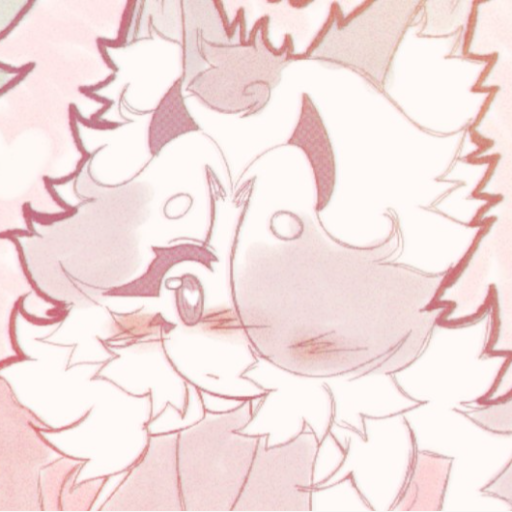

Основная информация
Вафф (wafflinte_ivory) - на данный момент владелец дискорд-сервера Вишневые Аллеи. Живет в Германии, увлекается рисованием. Самый близкий человек для Вафф - Сай.
Попадание на сервер
30 июля 2022 г. один из старых знакомых Черр скинул ссылку на приватный дружеский сервер (где находилась Вафф), ведущий на её видеоролик, с анимацией под названием "punk tactics" (на данный момент анимация недоступна и скрыта). Вафф сразу узнала стиль Черр и перешла по ссылке, подписалась на канал старой подруги, начав активно следить за творчеством авторши.
01.08.2022 на канале cherru выходит анимация "How did you love", в описании которой была ссылка-приглашение на её дискорд-сервер. Вафф не раздумывая заходит туда, так как ей хотелось найти новых друзей, попытаться отвлечься от негатива и вновь восстановить общение с самой Черр, что в последствии ей удалось. В дальнейшем, Черр и Вафф вновь начнут хорошо дружить/общаться, Вафф начнёт помогать Черр с управлением сервера, встав на должность администратора.
Уходы из сервера
- В один из дней Вафф ливает c сервера из-за страха перед, в прошлом, близким человеком, который очень негативно относился к Черр, но, успокоившись, вскоре возвращается обратно.
- Один из уходов был связан с тем, что, когда Сай и Вафф устроили первый в истории сервера хэллоуинский ивент, с запланированным большим сюжетом, который они прописывали в скрытых каналах на сервере. По просьбе Вафф открыть нужный канал, где была готова следующая часть ивента (на тот момент права администратора у Вафф были "обрезаны"), Дункан открывает абсолютно все каналы на всеобщее обозрение, что полностью обрушает всю инициативу и желание обоих работать, в ходе чего они уходят из сервера.
Интересные факты
- На сервере, из-за шутки Черр, Вафф поставила себе ник "Хагги Ванги", что на долгое время стало её основным никнеймом на сервере.
- Изначально Вафф использовала по отношению к себе мужские местоимения, притворяясь парнем из-за неприятного опыта в общении. Псевдоним "Вафф" возник случайно и забавно, однажды Вафф написала, что хочет вафли и Черр написала "ваф ли", что случайным образом подтолкнуло на создание данного никнейма.
- Вафф и Черр были знакомы ещё с 2019-2020-го года, благодаря чатам в Ютубе, которые в скором времени Ютуб и удалил. Активно начали общаться 2020-го года. 20.05.2021 общение прекращается до создания дискорд-сервера Вишнёвые Аллеи.
Вафф
| Аватарка | |
| Дата захода на сервер | 01.08.2022 |
| Должность | Администратор |
| Возраст | 17 лет |
| Дата рождения | 10.12.2006 |
| Место рождения | Украина |